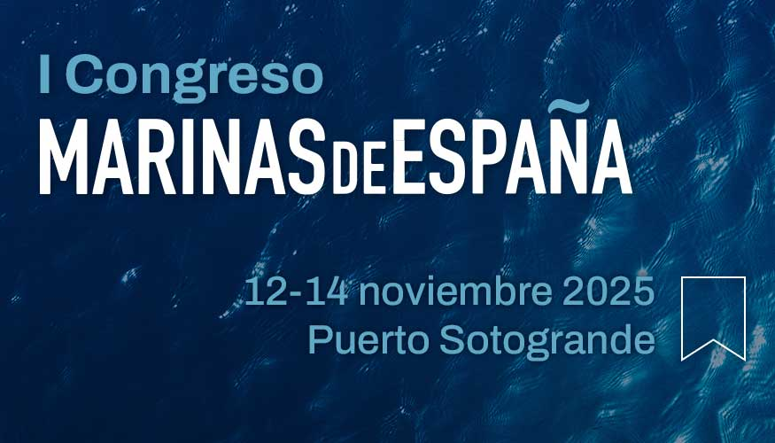

ESTRATEGIA
Marinas de España consolida su liderazgo y aprueba su hoja de ruta para 2025
La Asamblea General de Marinas de España ha ratificado por unanimidad la estrategia de crecimiento y consolidación del sector náutico español para el próximo ejercicio, incluyendo ambiciosos planes de expansión territorial y proyección internacional.
Leer más